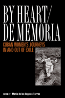

Remembering with the heart events and people from our past
Remembering with the heart events and people from our past


 Remembering with the heart events and people from our past
Remembering with the heart events and people from our past

|  |
By Heart/De MemoriaCuban Women's Journeys In and Out of Exileedited by Mar�a de los Angeles Torrespaper EAN: 978-1-59213-011-5 (ISBN: 1-59213-011-9) |
"By Heart/De Memoria is a very powerful book. The material is often very creative and approaches women, women's writing and women's experiences in an innovative way. People interested in U.S. Latina Literature and experiences will find this book moving, interesting, and of use."
—Eliana Rivero, Spanish and Portuguese Dept., The University of Arizona
In this moving account of the Cuban Revolution and its aftermath, eleven women who lived through it as children or young adults recall the events of the last forty years. In Torres's words, "This book, which began in Miami, looking toward the island, ends on the island as it gazes toward the exile community."
These poets, artists and scholars represent each post-revolution exile generation. Some left Cuba in the Peter Pan airlift, some left afterward, some never left at all. Others—like the editor—left as children only to return and leave again, disillusioned with both the exile community and with Castro's island. Together they testify to the powerful intersections of memory, politics, nation, and exile.
Excerpt available at www.temple.edu/tempress
"By Heart/De Memoria is another contribution to testimonial literature that almost seems de rigueur for literature and intellectually motivated Cuban exiles fleeing Castro's Cuba. de los Angeles Torres offers several unique and valuable contributions to the experience of the Cuban exile. The contributors to this volume are all women and their lament is for a homeland which they experience sensually and emotionally. Reading their testimonies leaves the reader no doubt about their suffering and grief, and it offers some explanation for the continued obsession with their homeland."
—K. Lynn Stoner, Department of History, Arizona State University
"The book's well-defined purpose and carefully selected contributors/contributions make it one of the better volumes on the subject. It enhances the understanding of the reader with these visions of political and personal reconciliation, and its different way of defining nationhood."
—The British Bulletin of Publications on Latin America, the Caribbean, Portugal, and Spain
"[F]ascinating... never before have we seen such refreshing, evocative and balanced testimonials written exclusively by women.... These eleven essays and poems represent more than an invaluable contribution to U.S. Latina/o studies and Women's Studies, they are a continuation of the dialogue and an essential element in the construction of cuban�a."
—The Americas
Preface
1. Introduction – Mar�a de los Angeles Torres
2. El Bote – Achy Obejas
3. Reflections – Liz Balmaseda
4. Donde los Fantasmas Bailan Guaguanc�: Where Ghosts Dance el Guaguanc� – Mar�a de los Angeles Torres
5. Not the Golden Age – Nereida Garc�a-Ferraz
6. From This Side of the Fishtank – Teresa de Jes�s Fern�ndez
7. Through Other Looking Glasses – Josefina de Diego
8. La Salida: The Departure – Mirta Ojito
9. The Recurring Dream – Carmen D�az
10. Only Fragments of Memory – Raquel Mendieta Costa
11. Words Without Borders – Madel�n C�mara
12. Postwar Memories – Tania Bruguera
About the Contributors
Mar�a de los Angeles Torres is Associate Professor of Political Science at DePaul University. She is the author of In the Land of Mirrors: The Politics of Cuban Exiles in the United States and the co-editor (with Frank Bonilla, Edwin Melendez, and Rebecca Morales) of Borderless Borders: Latinos and the Global Society (Temple).
Latin American/Caribbean Studies
Women's Studies
General Interest
© 2015 Temple University. All Rights Reserved. This page: http://www.temple.edu/tempress/titles/1633_reg.html.